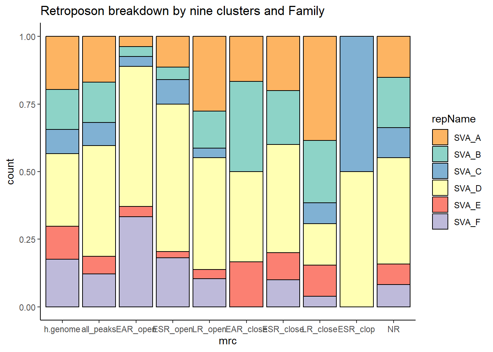

TE_analysis
Renee Matthews
2025-05-06
Last updated: 2025-05-12
Checks: 7 0
Knit directory: ATAC_learning/
This reproducible R Markdown analysis was created with workflowr (version 1.7.1). The Checks tab describes the reproducibility checks that were applied when the results were created. The Past versions tab lists the development history.
Great! Since the R Markdown file has been committed to the Git repository, you know the exact version of the code that produced these results.
Great job! The global environment was empty. Objects defined in the global environment can affect the analysis in your R Markdown file in unknown ways. For reproduciblity it’s best to always run the code in an empty environment.
The command set.seed(20231016) was run prior to running
the code in the R Markdown file. Setting a seed ensures that any results
that rely on randomness, e.g. subsampling or permutations, are
reproducible.
Great job! Recording the operating system, R version, and package versions is critical for reproducibility.
Nice! There were no cached chunks for this analysis, so you can be confident that you successfully produced the results during this run.
Great job! Using relative paths to the files within your workflowr project makes it easier to run your code on other machines.
Great! You are using Git for version control. Tracking code development and connecting the code version to the results is critical for reproducibility.
The results in this page were generated with repository version 2c939fe. See the Past versions tab to see a history of the changes made to the R Markdown and HTML files.
Note that you need to be careful to ensure that all relevant files for
the analysis have been committed to Git prior to generating the results
(you can use wflow_publish or
wflow_git_commit). workflowr only checks the R Markdown
file, but you know if there are other scripts or data files that it
depends on. Below is the status of the Git repository when the results
were generated:
Ignored files:
Ignored: .RData
Ignored: .Rhistory
Ignored: .Rproj.user/
Ignored: data/ACresp_SNP_table.csv
Ignored: data/ARR_SNP_table.csv
Ignored: data/All_merged_peaks.tsv
Ignored: data/CAD_gwas_dataframe.RDS
Ignored: data/CTX_SNP_table.csv
Ignored: data/Collapsed_expressed_NG_peak_table.csv
Ignored: data/DEG_toplist_sep_n45.RDS
Ignored: data/FRiP_first_run.txt
Ignored: data/Final_four_data/
Ignored: data/Frip_1_reads.csv
Ignored: data/Frip_2_reads.csv
Ignored: data/Frip_3_reads.csv
Ignored: data/Frip_4_reads.csv
Ignored: data/Frip_5_reads.csv
Ignored: data/Frip_6_reads.csv
Ignored: data/GO_KEGG_analysis/
Ignored: data/HF_SNP_table.csv
Ignored: data/Ind1_75DA24h_dedup_peaks.csv
Ignored: data/Ind1_TSS_peaks.RDS
Ignored: data/Ind1_firstfragment_files.txt
Ignored: data/Ind1_fragment_files.txt
Ignored: data/Ind1_peaks_list.RDS
Ignored: data/Ind1_summary.txt
Ignored: data/Ind2_TSS_peaks.RDS
Ignored: data/Ind2_fragment_files.txt
Ignored: data/Ind2_peaks_list.RDS
Ignored: data/Ind2_summary.txt
Ignored: data/Ind3_TSS_peaks.RDS
Ignored: data/Ind3_fragment_files.txt
Ignored: data/Ind3_peaks_list.RDS
Ignored: data/Ind3_summary.txt
Ignored: data/Ind4_79B24h_dedup_peaks.csv
Ignored: data/Ind4_TSS_peaks.RDS
Ignored: data/Ind4_V24h_fraglength.txt
Ignored: data/Ind4_fragment_files.txt
Ignored: data/Ind4_fragment_filesN.txt
Ignored: data/Ind4_peaks_list.RDS
Ignored: data/Ind4_summary.txt
Ignored: data/Ind5_TSS_peaks.RDS
Ignored: data/Ind5_fragment_files.txt
Ignored: data/Ind5_fragment_filesN.txt
Ignored: data/Ind5_peaks_list.RDS
Ignored: data/Ind5_summary.txt
Ignored: data/Ind6_TSS_peaks.RDS
Ignored: data/Ind6_fragment_files.txt
Ignored: data/Ind6_peaks_list.RDS
Ignored: data/Ind6_summary.txt
Ignored: data/Knowles_4.RDS
Ignored: data/Knowles_5.RDS
Ignored: data/Knowles_6.RDS
Ignored: data/LiSiLTDNRe_TE_df.RDS
Ignored: data/MI_gwas.RDS
Ignored: data/SNP_GWAS_PEAK_MRC_id
Ignored: data/SNP_GWAS_PEAK_MRC_id.csv
Ignored: data/SNP_gene_cat_list.tsv
Ignored: data/SNP_supp_schneider.RDS
Ignored: data/TE_info/
Ignored: data/TFmapnames.RDS
Ignored: data/all_TSSE_scores.RDS
Ignored: data/all_four_filtered_counts.txt
Ignored: data/aln_run1_results.txt
Ignored: data/anno_ind1_DA24h.RDS
Ignored: data/anno_ind4_V24h.RDS
Ignored: data/annotated_gwas_SNPS.csv
Ignored: data/background_n45_he_peaks.RDS
Ignored: data/cardiac_muscle_FRIP.csv
Ignored: data/cardiomyocyte_FRIP.csv
Ignored: data/col_ng_peak.csv
Ignored: data/cormotif_full_4_run.RDS
Ignored: data/cormotif_full_4_run_he.RDS
Ignored: data/cormotif_full_6_run.RDS
Ignored: data/cormotif_full_6_run_he.RDS
Ignored: data/cormotif_probability_45_list.csv
Ignored: data/cormotif_probability_45_list_he.csv
Ignored: data/cormotif_probability_all_6_list.csv
Ignored: data/cormotif_probability_all_6_list_he.csv
Ignored: data/datasave.RDS
Ignored: data/embryo_heart_FRIP.csv
Ignored: data/enhancer_list_ENCFF126UHK.bed
Ignored: data/enhancerdata/
Ignored: data/filt_Peaks_efit2.RDS
Ignored: data/filt_Peaks_efit2_bl.RDS
Ignored: data/filt_Peaks_efit2_n45.RDS
Ignored: data/first_Peaksummarycounts.csv
Ignored: data/first_run_frag_counts.txt
Ignored: data/full_bedfiles/
Ignored: data/gene_ref.csv
Ignored: data/gwas_1_dataframe.RDS
Ignored: data/gwas_2_dataframe.RDS
Ignored: data/gwas_3_dataframe.RDS
Ignored: data/gwas_4_dataframe.RDS
Ignored: data/gwas_5_dataframe.RDS
Ignored: data/high_conf_peak_counts.csv
Ignored: data/high_conf_peak_counts.txt
Ignored: data/high_conf_peaks_bl_counts.txt
Ignored: data/high_conf_peaks_counts.txt
Ignored: data/hits_files/
Ignored: data/hyper_files/
Ignored: data/hypo_files/
Ignored: data/ind1_DA24hpeaks.RDS
Ignored: data/ind1_TSSE.RDS
Ignored: data/ind2_TSSE.RDS
Ignored: data/ind3_TSSE.RDS
Ignored: data/ind4_TSSE.RDS
Ignored: data/ind4_V24hpeaks.RDS
Ignored: data/ind5_TSSE.RDS
Ignored: data/ind6_TSSE.RDS
Ignored: data/initial_complete_stats_run1.txt
Ignored: data/left_ventricle_FRIP.csv
Ignored: data/median_24_lfc.RDS
Ignored: data/median_3_lfc.RDS
Ignored: data/mergedPeads.gff
Ignored: data/mergedPeaks.gff
Ignored: data/motif_list_full
Ignored: data/motif_list_n45
Ignored: data/motif_list_n45.RDS
Ignored: data/multiqc_fastqc_run1.txt
Ignored: data/multiqc_fastqc_run2.txt
Ignored: data/multiqc_genestat_run1.txt
Ignored: data/multiqc_genestat_run2.txt
Ignored: data/my_hc_filt_counts.RDS
Ignored: data/my_hc_filt_counts_n45.RDS
Ignored: data/n45_bedfiles/
Ignored: data/n45_files
Ignored: data/other_papers/
Ignored: data/peakAnnoList_1.RDS
Ignored: data/peakAnnoList_2.RDS
Ignored: data/peakAnnoList_24_full.RDS
Ignored: data/peakAnnoList_24_n45.RDS
Ignored: data/peakAnnoList_3.RDS
Ignored: data/peakAnnoList_3_full.RDS
Ignored: data/peakAnnoList_3_n45.RDS
Ignored: data/peakAnnoList_4.RDS
Ignored: data/peakAnnoList_5.RDS
Ignored: data/peakAnnoList_6.RDS
Ignored: data/peakAnnoList_Eight.RDS
Ignored: data/peakAnnoList_full_motif.RDS
Ignored: data/peakAnnoList_n45_motif.RDS
Ignored: data/siglist_full.RDS
Ignored: data/siglist_n45.RDS
Ignored: data/summarized_peaks_dataframe.txt
Ignored: data/summary_peakIDandReHeat.csv
Ignored: data/test.list.RDS
Ignored: data/testnames.txt
Ignored: data/toplist_6.RDS
Ignored: data/toplist_full.RDS
Ignored: data/toplist_full_DAR_6.RDS
Ignored: data/toplist_n45.RDS
Ignored: data/trimmed_seq_length.csv
Ignored: data/unclassified_full_set_peaks.RDS
Ignored: data/unclassified_n45_set_peaks.RDS
Ignored: data/xstreme/
Untracked files:
Untracked: RNA_seq_integration.Rmd
Untracked: analysis/Diagnosis-tmm.Rmd
Untracked: analysis/Expressed_RNA_associations.Rmd
Untracked: analysis/H3K27ac_integration_noM.Rmd
Untracked: analysis/LFC_corr.Rmd
Untracked: analysis/SVA.Rmd
Untracked: analysis/Tan2020.Rmd
Untracked: analysis/making_master_peaks_list.Rmd
Untracked: analysis/my_hc_filt_counts.csv
Untracked: code/IGV_snapshot_code.R
Untracked: code/LongDARlist.R
Untracked: code/just_for_Fun.R
Untracked: output/cormotif_probability_45_list.csv
Untracked: output/cormotif_probability_all_6_list.csv
Untracked: setup.RData
Unstaged changes:
Modified: ATAC_learning.Rproj
Modified: analysis/AF_HF_SNPs.Rmd
Modified: analysis/Cormotif_analysis.Rmd
Modified: analysis/H3K27ac_cormotif.Rmd
Modified: analysis/H3K27ac_initial_QC.Rmd
Modified: analysis/H3K27ac_integration.Rmd
Modified: analysis/Jaspar_motif.Rmd
Modified: analysis/Jaspar_motif_ff.Rmd
Modified: analysis/RNA_seq_integration.Rmd
Modified: analysis/final_four_analysis.Rmd
Note that any generated files, e.g. HTML, png, CSS, etc., are not included in this status report because it is ok for generated content to have uncommitted changes.
These are the previous versions of the repository in which changes were
made to the R Markdown (analysis/TE_analysis_norm.Rmd) and
HTML (docs/TE_analysis_norm.html) files. If you’ve
configured a remote Git repository (see ?wflow_git_remote),
click on the hyperlinks in the table below to view the files as they
were in that past version.
| File | Version | Author | Date | Message |
|---|---|---|---|---|
| Rmd | 2c939fe | reneeisnowhere | 2025-05-12 | wflow_publish("analysis/TE_analysis_norm.Rmd") |
| html | 5e6e462 | reneeisnowhere | 2025-05-07 | Build site. |
| Rmd | 2db35c7 | reneeisnowhere | 2025-05-07 | updates to analysis |
library(tidyverse)
library(kableExtra)
library(broom)
library(RColorBrewer)
library(ChIPseeker)
library("TxDb.Hsapiens.UCSC.hg38.knownGene")
library("org.Hs.eg.db")
library(rtracklayer)
library(edgeR)
library(ggfortify)
library(limma)
library(readr)
library(BiocGenerics)
library(gridExtra)
library(VennDiagram)
library(scales)
library(BiocParallel)
library(ggpubr)
library(devtools)
library(biomaRt)
library(eulerr)
library(smplot2)
library(genomation)
library(ggsignif)
library(plyranges)
library(ggrepel)
library(epitools)
library(circlize)Loading repeatmasker data:
repeatmasker <- read.delim("data/other_papers/repeatmasker.tsv")Subsetting repeatmasker for analysis by class/family
reClass_list <- repeatmasker %>%
distinct(repClass)
Line_repeats <- repeatmasker %>%
dplyr::filter(repClass == "LINE") %>%
makeGRangesFromDataFrame(., keep.extra.columns = TRUE, seqnames.field = "genoName", start.field = "genoStart", end.field = "genoEnd",starts.in.df.are.0based=TRUE)
Sine_repeats <- repeatmasker %>%
dplyr::filter(repClass == "SINE") %>%
makeGRangesFromDataFrame(., keep.extra.columns = TRUE, seqnames.field = "genoName", start.field = "genoStart", end.field = "genoEnd",starts.in.df.are.0based=TRUE)
LTR_repeats <- repeatmasker %>%
dplyr::filter(repClass == "LTR") %>%
makeGRangesFromDataFrame(., keep.extra.columns = TRUE, seqnames.field = "genoName", start.field = "genoStart", end.field = "genoEnd",starts.in.df.are.0based=TRUE)
DNA_repeats <- repeatmasker %>%
dplyr::filter(repClass == "DNA") %>%
makeGRangesFromDataFrame(., keep.extra.columns = TRUE, seqnames.field = "genoName", start.field = "genoStart", end.field = "genoEnd",starts.in.df.are.0based=TRUE)
retroposon_repeats <- repeatmasker %>%
dplyr::filter(repClass == "Retroposon") %>%
makeGRangesFromDataFrame(., keep.extra.columns = TRUE, seqnames.field = "genoName", start.field = "genoStart", end.field = "genoEnd",starts.in.df.are.0based=TRUE)
all_TEs_gr <- repeatmasker %>%
makeGRangesFromDataFrame(., keep.extra.columns = TRUE, seqnames.field = "genoName", start.field = "genoStart", end.field = "genoEnd",starts.in.df.are.0based=TRUE)this code contains the fill functions for each of the plots that needed similar colors.
# scale fill repeat, 2nd set ----------------------------------------------
rep_other_names<- repeatmasker %>%
distinct(repClass) %>%
rbind("Other")
scale_fill_repeat <- function(...){
ggplot2:::manual_scale(
'fill',
values = setNames(c( "#8DD3C7",
"#FFFFB3",
"#BEBADA" ,
"#FB8072",
"#80B1D3",
"#FDB462",
"#B3DE69",
"#FCCDE5",
"#D9D9D9",
"#BC80BD",
"#CCEBC5",
"pink4",
"cornflowerblue",
"chocolate",
"brown",
"green",
"yellow4",
"purple",
"darkorchid4",
"coral4",
"darkolivegreen4",
"darkorange",
"darkgrey"), unique(rep_other_names$repClass)),
...
)
}
# scale fill LTRs ---------------------------------------------------------
LTR_df <- LTR_repeats %>%
as.data.frame() %>%
mutate(repFamily=factor(repFamily))
scale_fill_LTRs <- function(...){
ggplot2:::manual_scale(
'fill',
values = setNames(c( "#8DD3C7",
"#FFFFB3",
"#BEBADA" ,
"#FB8072",
"#80B1D3",
"#FDB462",
"#B3DE69",
"#FCCDE5",
"#D9D9D9",
"#BC80BD",
"#CCEBC5",
"pink4",
"cornflowerblue",
"chocolate",
"brown",
"green",
"yellow4",
"purple",
"darkorchid4",
"coral4",
"darkolivegreen4",
"darkorange"), unique(LTR_df$repFamily)),
...
)
}
scale_fill_DNA_family <- function(...){
ggplot2:::manual_scale(
'fill',
values = setNames(c( "#8DD3C7", "#FFFFB3", "#BEBADA" ,"#FB8072", "#80B1D3", "#FDB462", "#B3DE69", "#FCCDE5", "purple4"), unique(DNA_family$repFamily)),
...
)
}
# scale lines -------------------------------------------------------------
Line_df <- Line_repeats %>%
as.data.frame() %>%
mutate(repFamily=factor(repFamily))
scale_fill_lines <- function(...){
ggplot2:::manual_scale(
'fill',
values = setNames(c( "#8DD3C7",
"#FFFFB3",
"#BEBADA" ,
"#FB8072",
"#80B1D3",
"#FDB462",
"#B3DE69",
"#FCCDE5",
"#D9D9D9",
"#BC80BD",
"#CCEBC5",
"pink4",
"cornflowerblue",
"chocolate",
"brown",
"green",
"yellow4",
"purple",
"darkorchid4",
"coral4",
"darkolivegreen4",
"darkorange"), unique(Line_df$repFamily)),
...
)
}
# scale fill L2 family ----------------------------------------------------
L2_line_df<- Line_df %>%
dplyr::filter(repFamily=="L2")
scale_fill_L2 <- function(...){
ggplot2:::manual_scale(
'fill',
values = setNames(c( "#8DD3C7",
"#FFFFB3",
"#BEBADA" ,
"#FB8072",
"#80B1D3",
"#FDB462",
"#B3DE69",
"#FCCDE5",
"#D9D9D9",
"#BC80BD",
"#CCEBC5",
"pink4",
"cornflowerblue",
"chocolate",
"brown",
"green",
"yellow4",
"purple",
"darkorchid4",
"coral4",
"darkolivegreen4",
"darkorange"), unique(L2_line_df$repName)),
...
)
}
# scale fill sines --------------------------------------------------------
Sine_df <- Sine_repeats %>%
as.data.frame() %>%
mutate(repFamily=factor(repFamily))
scale_fill_sines <- function(...){
ggplot2:::manual_scale(
'fill',
values = setNames(c( "#8DD3C7",
"#FFFFB3",
"#BEBADA" ,
"#FB8072",
"#80B1D3",
"#FDB462",
"#B3DE69",
"#FCCDE5",
"#D9D9D9",
"#BC80BD",
"#CCEBC5",
"pink4",
"cornflowerblue",
"chocolate",
"brown",
"green",
"yellow4",
"purple",
"darkorchid4",
"coral4",
"darkolivegreen4",
"darkorange"), unique(Sine_df$repFamily)),
...
)
}
# scale fill DNAs ---------------------------------------------------------
DNA_df <- DNA_repeats %>%
as.data.frame() %>%
mutate(repFamily=factor(repFamily))
scale_fill_DNAs <- function(...){
ggplot2:::manual_scale(
'fill',
values = setNames(c( "#8DD3C7",
"#FFFFB3",
"#BEBADA" ,
"#FB8072",
"#80B1D3",
"#FDB462",
"#B3DE69",
"#FCCDE5",
"#D9D9D9",
"#BC80BD",
"#CCEBC5",
"pink4",
"cornflowerblue",
"chocolate",
"brown",
"green",
"yellow4",
"purple",
"darkorchid4",
"coral4",
"darkolivegreen4",
"darkorange",
"blue",
"grey",
"lightgrey"), unique(DNA_df$repFamily)),
...
)
}
# scale fill retroposons --------------------------------------------------
retroposon_df <- retroposon_repeats %>%
as.data.frame() %>%
mutate(repName=factor(repName))
scale_fill_retroposons <- function(...){
ggplot2:::manual_scale(
'fill',
values = setNames(c( "#8DD3C7",
"#FFFFB3",
"#BEBADA" ,
"#FB8072",
"#80B1D3",
"#FDB462",
"#B3DE69",
"#FCCDE5",
"#D9D9D9",
"#BC80BD",
"#CCEBC5",
"pink4",
"cornflowerblue",
"chocolate",
"brown",
"green",
"yellow4",
"purple",
"darkorchid4",
"coral4",
"darkolivegreen4",
"darkorange"), unique(retroposon_df$repName)),
...
)
}Bringing in my granges dataframes for each cluster
Motif_list_gr <- readRDS("data/Final_four_data/re_analysis/Motif_list_granges.RDS")
##order specific
df_list <- plyr::llply(Motif_list_gr, as.data.frame)
### no change motif_list_gr names so they do not overwrite the dataframes
names(Motif_list_gr) <- paste0(names(Motif_list_gr), "_gr")
list2env(Motif_list_gr,envir= .GlobalEnv)<environment: R_GlobalEnv>list2env(df_list,envir= .GlobalEnv)<environment: R_GlobalEnv>TSS_NG_data <- read_delim("data/Final_four_data/TSS_assigned_NG.txt",
delim = "\t", escape_double = FALSE,
trim_ws = TRUE)
Collapsed_peaks <- read_delim("data/Final_four_data/collapsed_new_peaks.txt",
delim = "\t",
escape_double = FALSE,
trim_ws = TRUE)
### the two data frames below contain all 172,418 peaks. I was only interested in the 155,557 (without chrY) This code filters out first the chrY reagions, followed by the regions not covered in the filtered log2cpm peaklist.
TSS_data_gr <- TSS_NG_data %>%
dplyr::filter(chr != "chrY") %>%
dplyr::filter(Peakid %in% all_regions$Peakid) %>%
GRanges()
Col_TSS_data_gr <- Collapsed_peaks %>%
dplyr::filter(chr != "chrY") %>%
dplyr::filter(Peakid %in% all_regions$Peakid) %>%
GRanges()First step: Overlap my peaks with repeatmasker
all_TEs_gr$TE_width <- width(all_TEs_gr)
Col_TSS_data_gr$peak_width <- width(Col_TSS_data_gr)
Col_fullDF_overlap <- join_overlap_intersect(Col_TSS_data_gr,all_TEs_gr)
Col_fullDF_overlap %>%
as.data.frame() %>%
group_by(repClass) %>%
tally %>%
kable(., caption=" Table 1: Count of peaks by TE class; overlap at least 1 bp; using one:one df ") %>%
kable_paper("striped", full_width = TRUE) %>%
kable_styling(full_width = FALSE, font_size = 14)| repClass | n |
|---|---|
| DNA | 16960 |
| DNA? | 138 |
| LINE | 40440 |
| LTR | 27844 |
| LTR? | 257 |
| Low_complexity | 5731 |
| RC | 52 |
| RC? | 9 |
| RNA | 28 |
| Retroposon | 295 |
| SINE | 52755 |
| SINE? | 1 |
| Satellite | 191 |
| Simple_repeat | 30184 |
| Unknown | 288 |
| rRNA | 54 |
| scRNA | 32 |
| snRNA | 144 |
| srpRNA | 44 |
| tRNA | 302 |
Col_fullDF_overlap %>%
as.data.frame %>%
mutate(per_ol= width/TE_width) %>%
dplyr::filter(per_ol>0.5) %>%
group_by(repClass) %>%
tally() %>%
kable(., caption=" Table 2:Count of peaks by TE class; overlap of >50% of TE; newway ") %>%
kable_paper("striped", full_width = TRUE) %>%
kable_styling(full_width = FALSE, font_size = 14)| repClass | n |
|---|---|
| DNA | 11821 |
| DNA? | 118 |
| LINE | 25548 |
| LTR | 18403 |
| LTR? | 199 |
| Low_complexity | 5305 |
| RC | 41 |
| RC? | 7 |
| RNA | 22 |
| Retroposon | 81 |
| SINE | 31936 |
| SINE? | 1 |
| Satellite | 81 |
| Simple_repeat | 28143 |
| Unknown | 242 |
| rRNA | 44 |
| scRNA | 24 |
| snRNA | 124 |
| srpRNA | 31 |
| tRNA | 291 |
Filter_TE_list <- Col_fullDF_overlap %>%
as.data.frame %>%
mutate(per_ol= width/TE_width)
# dplyr::filter(per_ol>0.5)
Unique_peak_overlap <- Col_fullDF_overlap %>%
as.data.frame() %>%
distinct(Peakid)
peak_overlap_50unique <- Filter_TE_list %>%
dplyr::filter(per_ol>0.5) %>%
distinct(Peakid)These number reflect the count of all regions that overlap at least one TE class. Many regions can contain more than one TE, and some TEs (such as some LINEs) overlap more than one region. The first table reflects the numbers of overlapping regions and TEs by at least 1 bp. The second table reflect the numbers of overlapping regions and TEs by at least 50% of the length of the TE.
Summary of Peak information below:
* Total number of peaks = 172481
* Total number of peaks overlapping at least 1 TE = 104149
* Total number of peaks overlapping by >50% TE length = 81185
note: these numbers include peaks that are not classified into a motif response cluster.
I created a dataframe of all TEs that overlap one peak. This means the dataframe has many entries for the same peakid, but unique TEs that overlap that peak by at least 1 bp. I then labeled each region-TE pair by the cluster each region is assigned to. Additionally there is a column that contains the ratio of the width of the overlap to the width of the TE, or as I called it the percent of overlap. I stratified all TEs into the following classes: LINEs, SINEs, LTRs, DNAs, Retroposons (SVA), and Other using the assigned repClass column from repeatmasker.
Create annotated peaks file
anno_TE_region_pairs <- Col_TSS_data_gr %>%
as.data.frame %>%
dplyr::select(Peakid) %>%
left_join(.,(Col_fullDF_overlap %>%
as.data.frame)) %>%
mutate(mrc = case_when(
Peakid %in% EAR_open$Peakid ~ "EAR_open",
Peakid %in% EAR_close$Peakid ~ "EAR_close",
Peakid %in% ESR_open$Peakid ~ "ESR_open",
Peakid %in% ESR_close$Peakid ~ "ESR_close",
Peakid %in% ESR_opcl$Peakid ~ "ESR_opcl",
Peakid %in% LR_open$Peakid ~ "LR_open",
Peakid %in% LR_close$Peakid ~ "LR_close",
Peakid %in% NR$Peakid ~ "NR",
Peakid %in% ESR_clop$Peakid ~ "ESR_clop",
TRUE ~ "not_mrc"
)) %>%
mutate(per_ol= width/TE_width) %>%
mutate(repClass_org=repClass) %>%
# mutate(repClass=if_else(per_ol>per_cov, repClass, if_else(per_ol<per_cov,NA,repClass))) %>%
mutate(TEstatus=if_else(is.na(repClass),"not_TE_peak","TE_peak")) %>%
mutate(repClass=factor(repClass)) %>%
mutate(repClass=if_else(##relable repClass with other
repClass_org=="LINE", repClass_org,
if_else(repClass_org=="SINE",repClass_org,
if_else(repClass_org=="LTR", repClass_org,
if_else(repClass_org=="DNA", repClass_org,
if_else(repClass_org=="Retroposon",repClass_org,
if_else(is.na(repClass_org), repClass_org, "Other"))))))) %>%
dplyr::select(Peakid, repName,repClass,repClass_org, repFamily, width, TEstatus, mrc, per_ol)There are a total of 227157 region-TE pairs out of a total of 155557 unique regions. Because of this many to many relationship, I needed to create a dataframe that just contained only those peaks that were in a cluster and count how many overlap.
Class_status_df <-
anno_TE_region_pairs %>%
dplyr::filter(mrc != "not_mrc") %>%
mutate(Sine_status = if_else(is.na(repClass),"not_sine",
if_else(repClass=="SINE","sine_peak", "not_sine"))) %>%
mutate(Line_status = if_else(is.na(repClass),"not_line",
if_else(repClass=="LINE","line_peak", "not_line"))) %>%
mutate(LTR_status = if_else(is.na(repClass),"not_LTR",
if_else(repClass=="LTR","LTR_peak", "not_LTR"))) %>%
mutate(DNA_status = if_else(is.na(repClass),"not_DNA",
if_else(repClass=="DNA","DNA_peak", "not_DNA"))) %>%
mutate(Retro_status = if_else(is.na(repClass)&is.na(per_ol),"not_Retro",
if_else(repClass=="Retroposon","Retro_peak", "not_Retro"))) %>%
mutate(TEstatus=factor(TEstatus, levels = c("TE_peak","not_TE_peak")))%>%
mutate(Sine_status=factor(Sine_status, levels = c("sine_peak","not_sine")),
Line_status=factor(Line_status, levels =c("line_peak","not_line")),
LTR_status=factor(LTR_status, levels =c("LTR_peak","not_LTR")),
DNA_status=factor(DNA_status, levels =c("DNA_peak","not_DNA")),
Retro_status=factor(Retro_status, levels =c("Retro_peak","not_Retro"))) %>%
mutate(mrc=factor(mrc, levels = c("EAR_open","ESR_open","LR_open","ESR_opcl", "EAR_close","ESR_close","LR_close","ESR_clop", "NR")))To get a better count of response cluster region-TE overlap numbers, I created a dataframe that removed the non-cluster peaks and tallied up the remaining numbers.
Tally of regions for enrichment counts
TE_mat<- Class_status_df %>%
mutate(mrc=factor(mrc, levels = c("EAR_open","ESR_open","LR_open","ESR_opcl", "EAR_close","ESR_close","LR_close","ESR_clop", "NR"))) %>%
dplyr::filter(mrc != "not_mrc") %>%
group_by(TEstatus, mrc) %>%
distinct(Peakid,TEstatus) %>%
tally %>%
mutate(mrc=factor(mrc, levels = c("EAR_open","ESR_open","LR_open","ESR_opcl", "EAR_close","ESR_close","LR_close","ESR_clop", "NR"))) %>%
pivot_wider(id_cols = mrc, names_from = TEstatus,values_from = n) %>%
column_to_rownames("mrc") %>%
as.matrix(.)
TE_mat TE_peak not_TE_peak
EAR_open 3192 1707
ESR_open 4262 2015
LR_open 18064 7553
ESR_opcl 136 67
EAR_close 1991 1084
ESR_close 5024 2910
LR_close 12206 6404
ESR_clop 497 217
NR 56815 28339SINE_mat<- Class_status_df %>%
mutate(mrc=factor(mrc, levels = c("EAR_open","ESR_open","LR_open","ESR_opcl", "EAR_close","ESR_close","LR_close","ESR_clop", "NR"))) %>%
dplyr::filter(mrc != "not_mrc") %>%
group_by(Peakid) %>%
summarise(Sine_peak_status = ifelse(any(Sine_status == "sine_peak"), "sine_peak", "not_sine_peak"), mrc=unique(mrc)) %>%
ungroup() %>%
group_by(Sine_peak_status, mrc) %>%
tally %>%
mutate(mrc=factor(mrc, levels = c("EAR_open","ESR_open","LR_open","ESR_opcl", "EAR_close","ESR_close","LR_close","ESR_clop", "NR"))) %>%
pivot_wider(id_cols = mrc, names_from = Sine_peak_status,values_from = n) %>%
column_to_rownames("mrc") %>%
na.omit(.) %>%
as.matrix(.)
SINE_mat not_sine_peak sine_peak
EAR_open 3661 1238
ESR_open 4634 1643
LR_open 17547 8070
ESR_opcl 143 60
EAR_close 2205 870
ESR_close 5869 2065
LR_close 13774 4836
ESR_clop 473 241
NR 62146 23008LINE_mat<- Class_status_df %>%
mutate(mrc=factor(mrc, levels = c("EAR_open","ESR_open","LR_open","ESR_opcl", "EAR_close","ESR_close","LR_close","ESR_clop", "NR"))) %>%
dplyr::filter(mrc != "not_mrc") %>%
group_by(Peakid) %>%
summarise(Line_peak_status = ifelse(any(Line_status == "line_peak"), "line_peak", "not_line_peak"), mrc=unique(mrc)) %>%
ungroup() %>%
group_by(Line_peak_status, mrc) %>%
tally %>%
mutate(mrc=factor(mrc, levels = c("EAR_open","ESR_open","LR_open","ESR_opcl", "EAR_close","ESR_close","LR_close","ESR_clop", "NR"))) %>%
pivot_wider(id_cols = mrc, names_from = Line_peak_status,values_from = n) %>%
column_to_rownames("mrc") %>%
na.omit(.) %>%
as.matrix(.)
LINE_mat line_peak not_line_peak
EAR_open 958 3941
ESR_open 1385 4892
LR_open 6421 19196
ESR_opcl 54 149
EAR_close 685 2390
ESR_close 1660 6274
LR_close 4224 14386
ESR_clop 161 553
NR 17945 67209LTR_mat<-
Class_status_df %>%
mutate(mrc=factor(mrc, levels = c("EAR_open","ESR_open","LR_open","ESR_opcl", "EAR_close","ESR_close","LR_close","ESR_clop", "NR"))) %>%
dplyr::filter(mrc != "not_mrc") %>%
group_by(Peakid) %>%
summarise(LTR_peak_status = ifelse(any(LTR_status == "LTR_peak"), "LTR_peak", "not_LTR_peak"), mrc=unique(mrc)) %>%
ungroup() %>%
group_by(LTR_peak_status, mrc) %>%
tally %>%
mutate(mrc=factor(mrc, levels = c("EAR_open","ESR_open","LR_open","ESR_opcl", "EAR_close","ESR_close","LR_close","ESR_clop", "NR"))) %>%
pivot_wider(id_cols = mrc, names_from = LTR_peak_status,values_from = n) %>%
column_to_rownames("mrc") %>%
na.omit(.) %>%
as.matrix(.)
LTR_mat LTR_peak not_LTR_peak
EAR_open 560 4339
ESR_open 804 5473
LR_open 4484 21133
ESR_opcl 30 173
EAR_close 490 2585
ESR_close 1102 6832
LR_close 2906 15704
ESR_clop 123 591
NR 11755 73399DNA_mat<-Class_status_df %>%
mutate(mrc=factor(mrc, levels = c("EAR_open","ESR_open","LR_open","ESR_opcl", "EAR_close","ESR_close","LR_close","ESR_clop", "NR"))) %>%
dplyr::filter(mrc != "not_mrc") %>%
group_by(Peakid) %>%
summarise(DNA_peak_status = ifelse(any(DNA_status == "DNA_peak"), "DNA_peak", "not_DNA_peak"), mrc=unique(mrc)) %>%
ungroup() %>%
group_by(DNA_peak_status, mrc) %>%
tally %>%
mutate(mrc=factor(mrc, levels = c("EAR_open","ESR_open","LR_open","ESR_opcl", "EAR_close","ESR_close","LR_close","ESR_clop", "NR"))) %>%
pivot_wider(id_cols = mrc, names_from = DNA_peak_status,values_from = n) %>%
column_to_rownames("mrc") %>%
na.omit(.) %>%
as.matrix(.)
DNA_mat DNA_peak not_DNA_peak
EAR_open 436 4463
ESR_open 602 5675
LR_open 3008 22609
ESR_opcl 18 185
EAR_close 256 2819
ESR_close 660 7274
LR_close 1778 16832
ESR_clop 80 634
NR 7980 77174Retro_mat<- Class_status_df %>%
mutate(mrc=factor(mrc, levels = c("EAR_open","ESR_open","LR_open","ESR_opcl", "EAR_close","ESR_close","LR_close","ESR_clop", "NR"))) %>%
dplyr::filter(mrc != "not_mrc") %>%
group_by(Peakid) %>%
summarise(Retro_peak_status = ifelse(any(Retro_status == "Retro_peak"), "Retro_peak", "not_Retro_peak"), mrc=unique(mrc)) %>%
ungroup() %>%
group_by(Retro_peak_status, mrc) %>%
tally %>%
mutate(mrc=factor(mrc, levels = c("EAR_open","ESR_open","LR_open","ESR_opcl", "EAR_close","ESR_close","LR_close","ESR_clop", "NR"))) %>%
pivot_wider(id_cols = mrc, names_from = Retro_peak_status,values_from = n) %>%
column_to_rownames("mrc") %>%
na.omit(.) %>%
as.matrix(.)
Retro_mat Retro_peak not_Retro_peak
EAR_open 26 4873
ESR_open 43 6234
LR_open 28 25589
EAR_close 6 3069
ESR_close 10 7924
LR_close 26 18584
ESR_clop 2 712
NR 144 85010odds ratio results
matrix_list <- list("TE"=TE_mat, "Lines"=LINE_mat,"Sines"=SINE_mat, "DNA"= DNA_mat,"LTR"= LTR_mat,"Retro"= Retro_mat)
results_or <- data.frame(Matrix_Name = character(),
Row_Compared = character(),
Odds_Ratio = numeric(),
Lower_CI = numeric(),
Upper_CI = numeric(),
P_Value = numeric(),
stringsAsFactors = FALSE)
# Loop through each matrix in the list
for (matrix_name in names(matrix_list)) {
current_matrix <- matrix_list[[matrix_name]]
n_rows <- nrow(current_matrix)
# Loop through each row of the current matrix (except the last row)
for (i in 1:(n_rows - 1)) {
# Perform odds ratio test between row i and the last row using epitools
test_result <- tryCatch({
contingency_table <- rbind(current_matrix[i, ], current_matrix[n_rows, ])
# Check if any row in the contingency table contains only zeros
if (any(rowSums(contingency_table) == 0)) {
stop("Contingency table contains empty rows.")
}
oddsratio_result <- oddsratio(contingency_table)
# Ensure the oddsratio result has at least 2 rows
if (nrow(oddsratio_result$measure) < 2) {
stop("oddsratio result does not have enough data.")
}
list(oddsratio = oddsratio_result, p.value = oddsratio_result$p.value[2,"chi.square"])
}, error = function(e) {
cat("Error in odds ratio test for row", i, "in matrix", matrix_name, ":", e$message, "\n")
return(NULL)
})
# Only store the result if test_result is valid (i.e., not NULL)
if (!is.null(test_result)) {
or_value <- test_result$oddsratio$measure[2, "estimate"]
lower_ci <- test_result$oddsratio$measure[2, "lower"]
upper_ci <- test_result$oddsratio$measure[2, "upper"]
p_value <- test_result$oddsratio$p.value[2,"chi.square"]
# Check if the values are numeric and valid (not NA)
if (!is.na(or_value) && !is.na(lower_ci) && !is.na(upper_ci) && !is.na(p_value)) {
# Store the results in the dataframe
results_or <- rbind(results_or, data.frame(Matrix_Name = matrix_name,
Row_Compared = rownames(current_matrix)[i],
Odds_Ratio = or_value,
Lower_CI = lower_ci,
Upper_CI = upper_ci,
P_Value = p_value))
}
}
}
}
# Print the resulting dataframe
print(results_or) %>%
kable(., caption = "Odd ratio results and significance values of TE enrichment compared to No response group") %>%
kable_paper("striped", full_width = TRUE) %>%
kable_styling(full_width = FALSE, font_size = 14) %>%
scroll_box(width = "100%", height = "400px") Matrix_Name Row_Compared Odds_Ratio Lower_CI Upper_CI P_Value
estimate TE EAR_open 0.9326787 0.8780874 0.9909838 2.395768e-02
estimate1 TE ESR_open 1.0549822 0.9987804 1.1146568 5.571991e-02
estimate2 TE LR_open 1.1929009 1.1572304 1.2297991 5.238448e-30
estimate3 TE ESR_opcl 1.0111986 0.7574587 1.3631835 9.338637e-01
estimate4 TE EAR_close 0.9160869 0.8497805 0.9880173 2.266358e-02
estimate5 TE ESR_close 0.8611254 0.8209623 0.9033995 8.792275e-10
estimate6 TE LR_close 0.9506916 0.9194616 0.9830436 3.036327e-03
estimate7 TE ESR_clop 1.1419134 0.9744285 1.3426138 1.029132e-01
estimate8 Lines EAR_open 0.9105479 0.8464440 0.9785537 1.114943e-02
estimate9 Lines ESR_open 1.0604542 0.9964684 1.1278305 6.346780e-02
estimate10 Lines LR_open 1.2527944 1.2124434 1.2943884 1.137332e-41
estimate11 Lines ESR_opcl 1.3600053 0.9871474 1.8454560 5.381909e-02
estimate12 Lines EAR_close 1.0736151 0.9839662 1.1698953 1.083677e-01
estimate13 Lines ESR_close 0.9910085 0.9362787 1.0483962 7.524273e-01
estimate14 Lines LR_close 1.0997115 1.0585766 1.1422609 9.775393e-07
estimate15 Lines ESR_clop 1.0911885 0.9120647 1.2981719 3.358181e-01
estimate16 Sines EAR_open 1.0947373 1.0249381 1.1700605 7.286595e-03
estimate17 Sines ESR_open 1.0441363 0.9852478 1.1070514 1.457169e-01
estimate18 Sines LR_open 0.8049678 0.7809147 0.8298772 1.485141e-44
estimate19 Sines ESR_opcl 0.8809862 0.6548222 1.2000122 4.161619e-01
estimate20 Sines EAR_close 0.9382318 0.8665187 1.0167132 1.184253e-01
estimate21 Sines ESR_close 1.0521907 0.9986320 1.1089562 5.676177e-02
estimate22 Sines LR_close 1.0544723 1.0171765 1.0933143 3.954249e-03
estimate23 Sines ESR_clop 0.7264128 0.6222574 0.8501009 5.513223e-05
estimate24 DNA EAR_open 0.9450687 0.8531861 1.0442670 2.702500e-01
estimate25 DNA ESR_open 1.0261196 0.9396783 1.1185537 5.653075e-01
estimate26 DNA LR_open 1.2866976 1.2305515 1.3450635 8.915919e-29
estimate27 DNA ESR_opcl 0.9487322 0.5634886 1.4964237 8.054871e-01
estimate28 DNA EAR_close 0.8787484 0.7698564 0.9986291 5.013071e-02
estimate29 DNA ESR_close 0.8776729 0.8071411 0.9528443 1.998671e-03
estimate30 DNA LR_close 1.0216361 0.9676373 1.0780728 4.390901e-01
estimate31 DNA ESR_clop 1.2224984 0.9606228 1.5343006 9.439746e-02
estimate32 LTR EAR_open 0.8060693 0.7358503 0.8812810 2.579325e-06
estimate33 LTR ESR_open 0.9174259 0.8492514 0.9897909 2.698604e-02
estimate34 LTR LR_open 1.3248650 1.2758442 1.3755778 8.924898e-49
estimate35 LTR ESR_opcl 1.0876923 0.7233397 1.5783317 6.878557e-01
estimate36 LTR EAR_close 1.1838902 1.0717159 1.3051632 7.872200e-04
estimate37 LTR ESR_close 1.0072998 0.9420227 1.0761214 8.333988e-01
estimate38 LTR LR_close 1.1555020 1.1054908 1.2074049 1.320922e-10
estimate39 LTR ESR_clop 1.3009137 1.0655474 1.5752845 8.343178e-03
estimate40 Retro EAR_open 3.1660969 2.0358902 4.7268818 1.427357e-08
estimate41 Retro ESR_open 4.0828533 2.8671676 5.6932145 2.509287e-18
estimate42 Retro LR_open 0.6490465 0.4238958 0.9574074 3.305715e-02
estimate43 Retro EAR_close 1.1841032 0.4606255 2.4544033 7.308222e-01
estimate44 Retro ESR_close 0.7563959 0.3711631 1.3630688 3.666472e-01
estimate45 Retro LR_close 0.8302167 0.5341918 1.2386154 3.690614e-01
estimate46 Retro ESR_clop 1.7851551 0.2751350 5.5793445 4.734000e-01| Matrix_Name | Row_Compared | Odds_Ratio | Lower_CI | Upper_CI | P_Value | |
|---|---|---|---|---|---|---|
| estimate | TE | EAR_open | 0.9326787 | 0.8780874 | 0.9909838 | 0.0239577 |
| estimate1 | TE | ESR_open | 1.0549822 | 0.9987804 | 1.1146568 | 0.0557199 |
| estimate2 | TE | LR_open | 1.1929009 | 1.1572304 | 1.2297991 | 0.0000000 |
| estimate3 | TE | ESR_opcl | 1.0111986 | 0.7574587 | 1.3631835 | 0.9338637 |
| estimate4 | TE | EAR_close | 0.9160869 | 0.8497805 | 0.9880173 | 0.0226636 |
| estimate5 | TE | ESR_close | 0.8611254 | 0.8209623 | 0.9033995 | 0.0000000 |
| estimate6 | TE | LR_close | 0.9506916 | 0.9194616 | 0.9830436 | 0.0030363 |
| estimate7 | TE | ESR_clop | 1.1419134 | 0.9744285 | 1.3426138 | 0.1029132 |
| estimate8 | Lines | EAR_open | 0.9105479 | 0.8464440 | 0.9785537 | 0.0111494 |
| estimate9 | Lines | ESR_open | 1.0604542 | 0.9964684 | 1.1278305 | 0.0634678 |
| estimate10 | Lines | LR_open | 1.2527944 | 1.2124434 | 1.2943884 | 0.0000000 |
| estimate11 | Lines | ESR_opcl | 1.3600053 | 0.9871474 | 1.8454560 | 0.0538191 |
| estimate12 | Lines | EAR_close | 1.0736151 | 0.9839662 | 1.1698953 | 0.1083677 |
| estimate13 | Lines | ESR_close | 0.9910085 | 0.9362787 | 1.0483962 | 0.7524273 |
| estimate14 | Lines | LR_close | 1.0997115 | 1.0585766 | 1.1422609 | 0.0000010 |
| estimate15 | Lines | ESR_clop | 1.0911885 | 0.9120647 | 1.2981719 | 0.3358181 |
| estimate16 | Sines | EAR_open | 1.0947373 | 1.0249381 | 1.1700605 | 0.0072866 |
| estimate17 | Sines | ESR_open | 1.0441363 | 0.9852478 | 1.1070514 | 0.1457169 |
| estimate18 | Sines | LR_open | 0.8049678 | 0.7809147 | 0.8298772 | 0.0000000 |
| estimate19 | Sines | ESR_opcl | 0.8809862 | 0.6548222 | 1.2000122 | 0.4161619 |
| estimate20 | Sines | EAR_close | 0.9382318 | 0.8665187 | 1.0167132 | 0.1184253 |
| estimate21 | Sines | ESR_close | 1.0521907 | 0.9986320 | 1.1089562 | 0.0567618 |
| estimate22 | Sines | LR_close | 1.0544723 | 1.0171765 | 1.0933143 | 0.0039542 |
| estimate23 | Sines | ESR_clop | 0.7264128 | 0.6222574 | 0.8501009 | 0.0000551 |
| estimate24 | DNA | EAR_open | 0.9450687 | 0.8531861 | 1.0442670 | 0.2702500 |
| estimate25 | DNA | ESR_open | 1.0261196 | 0.9396783 | 1.1185537 | 0.5653075 |
| estimate26 | DNA | LR_open | 1.2866976 | 1.2305515 | 1.3450635 | 0.0000000 |
| estimate27 | DNA | ESR_opcl | 0.9487322 | 0.5634886 | 1.4964237 | 0.8054871 |
| estimate28 | DNA | EAR_close | 0.8787484 | 0.7698564 | 0.9986291 | 0.0501307 |
| estimate29 | DNA | ESR_close | 0.8776729 | 0.8071411 | 0.9528443 | 0.0019987 |
| estimate30 | DNA | LR_close | 1.0216361 | 0.9676373 | 1.0780728 | 0.4390901 |
| estimate31 | DNA | ESR_clop | 1.2224984 | 0.9606228 | 1.5343006 | 0.0943975 |
| estimate32 | LTR | EAR_open | 0.8060693 | 0.7358503 | 0.8812810 | 0.0000026 |
| estimate33 | LTR | ESR_open | 0.9174259 | 0.8492514 | 0.9897909 | 0.0269860 |
| estimate34 | LTR | LR_open | 1.3248650 | 1.2758442 | 1.3755778 | 0.0000000 |
| estimate35 | LTR | ESR_opcl | 1.0876923 | 0.7233397 | 1.5783317 | 0.6878557 |
| estimate36 | LTR | EAR_close | 1.1838902 | 1.0717159 | 1.3051632 | 0.0007872 |
| estimate37 | LTR | ESR_close | 1.0072998 | 0.9420227 | 1.0761214 | 0.8333988 |
| estimate38 | LTR | LR_close | 1.1555020 | 1.1054908 | 1.2074049 | 0.0000000 |
| estimate39 | LTR | ESR_clop | 1.3009137 | 1.0655474 | 1.5752845 | 0.0083432 |
| estimate40 | Retro | EAR_open | 3.1660969 | 2.0358902 | 4.7268818 | 0.0000000 |
| estimate41 | Retro | ESR_open | 4.0828533 | 2.8671676 | 5.6932145 | 0.0000000 |
| estimate42 | Retro | LR_open | 0.6490465 | 0.4238958 | 0.9574074 | 0.0330571 |
| estimate43 | Retro | EAR_close | 1.1841032 | 0.4606255 | 2.4544033 | 0.7308222 |
| estimate44 | Retro | ESR_close | 0.7563959 | 0.3711631 | 1.3630688 | 0.3666472 |
| estimate45 | Retro | LR_close | 0.8302167 | 0.5341918 | 1.2386154 | 0.3690614 |
| estimate46 | Retro | ESR_clop | 1.7851551 | 0.2751350 | 5.5793445 | 0.4734000 |
col_fun_OR = colorRamp2(c(0,1,1.5,5), c("blueviolet","white","lightgreen","green3" ))
sig_mat_OR <- results_or %>%
as.data.frame() %>%
dplyr::select( Matrix_Name,Row_Compared,P_Value) %>%
group_by(Row_Compared) %>%
mutate(rank_val=rank(P_Value, ties.method = "first")) %>%
mutate(BH_correction= p.adjust(P_Value,method= "BH")) %>%
pivot_wider(., id_cols = Matrix_Name, names_from = Row_Compared, values_from = BH_correction) %>%
dplyr::select(Matrix_Name,EAR_open,ESR_open,LR_open,ESR_opcl,EAR_close,ESR_close,LR_close,ESR_clop) %>%
column_to_rownames("Matrix_Name") %>%
as.matrix()
# saveRDS(results_or,"data/Final_four_data/re_analysis/OR_results_TE_df_1bp.RDS")results_or %>%
as.data.frame() %>%
dplyr::select( Matrix_Name,Row_Compared,Odds_Ratio) %>%
pivot_wider(., id_cols = Matrix_Name, names_from = Row_Compared, values_from = Odds_Ratio) %>%
dplyr::select(Matrix_Name,EAR_open,ESR_open,LR_open,ESR_opcl,EAR_close,ESR_close,LR_close,ESR_clop) %>%
column_to_rownames("Matrix_Name") %>%
as.matrix() %>%
ComplexHeatmap::Heatmap(. ,col = col_fun_OR,
cluster_rows=FALSE,
cluster_columns=FALSE,
column_names_side = "top",
column_names_rot = 45,
# na_col = "black",
cell_fun = function(j, i, x, y, width, height, fill) {if (!is.na(sig_mat_OR[i, j]) && sig_mat_OR[i, j] < 0.05 && .[i, j] > 1) {
grid.text("*", x, y, gp = gpar(fontsize = 20))}})
| Version | Author | Date |
|---|---|---|
| 5e6e462 | reneeisnowhere | 2025-05-07 |
note, this is not corrected for multiple testing After correcting for multiple testing across all tests check out the finalized figure
Examining the Retroposons (SVAs)
ggretroposon_df <-
retroposon_df %>%
dplyr::filter(repClass=="Retroposon") %>%
tidyr::unite(Peakid,seqnames:end, sep= ".") %>%
dplyr::select(Peakid,repName,repClass, repFamily,width) %>%
mutate(TEstatus ="TE_peak", mrc="h.genome",per_ol = NA) %>%
mutate(repClass_org=repClass)
all_peaks <- anno_TE_region_pairs %>%
dplyr::filter(repClass=="Retroposon") %>%
mutate(mrc="all_peaks")
nine_retro <-
anno_TE_region_pairs %>%
dplyr::filter(repClass=="Retroposon") %>%
dplyr::filter(mrc != "not_mrc") %>%
bind_rows(ggretroposon_df) %>%
bind_rows(all_peaks) %>%
mutate(repName=factor(repName)) %>%
mutate(mrc=factor(mrc, levels = c("h.genome","all_peaks","EAR_open","ESR_open", "LR_open","ESR_opcl","EAR_close","ESR_close","LR_close","ESR_clop","NR")))
nine_retro %>%
ggplot(., aes(x=mrc, fill= repName))+
geom_bar(position="fill", col="black")+
theme_bw()+
ggtitle(paste("Retroposon breakdown by nine clusters and Family"))+
scale_fill_retroposons()
| Version | Author | Date |
|---|---|---|
| 5e6e462 | reneeisnowhere | 2025-05-07 |
nine_retro %>%
group_by(mrc,repName) %>%
tally %>%
pivot_wider(., id_cols = mrc, names_from = repName, values_from = n) %>%
rowwise() %>%
mutate(total= sum(c_across(1:6),na.rm =TRUE)) %>%
mutate(SVA_D_perc= SVA_D/sum(c_across(1:6),na.rm =TRUE)) %>%
kable(., caption="Breakdown of Retroposon counts by Name") %>%
kable_paper("striped", full_width = TRUE) %>%
kable_styling(full_width = FALSE, font_size = 14)%>%
scroll_box(height = "500px")| mrc | SVA_A | SVA_B | SVA_C | SVA_D | SVA_E | SVA_F | total | SVA_D_perc |
|---|---|---|---|---|---|---|---|---|
| h.genome | 1172 | 885 | 536 | 1601 | 726 | 1054 | 5974 | 0.2679946 |
| all_peaks | 50 | 44 | 25 | 121 | 19 | 36 | 295 | 0.4101695 |
| EAR_open | 1 | 1 | 1 | 14 | 1 | 9 | 27 | 0.5185185 |
| ESR_open | 5 | 2 | 4 | 24 | 1 | 8 | 44 | 0.5454545 |
| LR_open | 8 | 4 | 1 | 12 | 1 | 3 | 29 | 0.4137931 |
| EAR_close | 1 | 2 | NA | 2 | 1 | NA | 6 | 0.3333333 |
| ESR_close | 2 | 2 | NA | 4 | 1 | 1 | 10 | 0.4000000 |
| LR_close | 10 | 6 | 2 | 4 | 3 | 1 | 26 | 0.1538462 |
| ESR_clop | NA | NA | 1 | 1 | NA | NA | 2 | 0.5000000 |
| NR | 22 | 27 | 16 | 57 | 11 | 12 | 145 | 0.3931034 |
mrc_lookup_table <- data.frame(mrc=c("EAR_open","ESR_open", "LR_open","ESR_opcl","EAR_close","ESR_close","LR_close","ESR_clop","NR","all_peaks","h.genome"),
peaks = c(length(EAR_open$seqnames),
length(ESR_open$seqnames),
length(LR_open$seqnames),
length(ESR_opcl$seqnames),
length(EAR_close$seqnames),
length(ESR_close$seqnames),
length(LR_close$seqnames),
length(ESR_clop$seqnames),
length(NR$seqnames),
length(Collapsed_peaks$chr),
5974))
nine_retro %>%
group_by(mrc,repName) %>%
tally %>%
pivot_wider(., id_cols = mrc, names_from = repName, values_from = n) %>%
rowwise() %>%
mutate(total= sum(c_across(1:6),na.rm =TRUE)) %>%
left_join(., mrc_lookup_table, by = c("mrc"="mrc")) %>%
# mutate(percent_of_total = (total/length(paste0(mrc,"$seqnames"))) * 100) %>%
# mutate(SVA_D_perc=sprintf("%.2f",SVA_D_perc))
mutate(percent_of_total= total/peaks *100) %>%
# dplyr::select(mrc, SVA_D, total, SVA_D_perc) %>%
# pivot_longer(., cols = SVA_D:SVA_D_perc, names_to = "sum_col",values_to = "values") %>%
# pivot_wider(., id_cols = sum_col, names_from = mrc, values_from = values) %>%
kable(., caption="Breakdown of Retroposon/SVA counts") %>%
kable_paper("striped", full_width = TRUE) %>%
kable_styling(full_width = TRUE, font_size = 14)%>%
scroll_box(height = "500px")| mrc | SVA_A | SVA_B | SVA_C | SVA_D | SVA_E | SVA_F | total | peaks | percent_of_total |
|---|---|---|---|---|---|---|---|---|---|
| h.genome | 1172 | 885 | 536 | 1601 | 726 | 1054 | 5974 | 5974 | 100.0000000 |
| all_peaks | 50 | 44 | 25 | 121 | 19 | 36 | 295 | 172481 | 0.1710333 |
| EAR_open | 1 | 1 | 1 | 14 | 1 | 9 | 27 | 4899 | 0.5511329 |
| ESR_open | 5 | 2 | 4 | 24 | 1 | 8 | 44 | 6277 | 0.7009718 |
| LR_open | 8 | 4 | 1 | 12 | 1 | 3 | 29 | 25617 | 0.1132061 |
| EAR_close | 1 | 2 | NA | 2 | 1 | NA | 6 | 3075 | 0.1951220 |
| ESR_close | 2 | 2 | NA | 4 | 1 | 1 | 10 | 7934 | 0.1260398 |
| LR_close | 10 | 6 | 2 | 4 | 3 | 1 | 26 | 18610 | 0.1397098 |
| ESR_clop | NA | NA | 1 | 1 | NA | NA | 2 | 714 | 0.2801120 |
| NR | 22 | 27 | 16 | 57 | 11 | 12 | 145 | 85154 | 0.1702797 |
sessionInfo()R version 4.4.2 (2024-10-31 ucrt)
Platform: x86_64-w64-mingw32/x64
Running under: Windows 11 x64 (build 26100)
Matrix products: default
locale:
[1] LC_COLLATE=English_United States.utf8
[2] LC_CTYPE=English_United States.utf8
[3] LC_MONETARY=English_United States.utf8
[4] LC_NUMERIC=C
[5] LC_TIME=English_United States.utf8
time zone: America/Chicago
tzcode source: internal
attached base packages:
[1] grid stats4 stats graphics grDevices utils datasets
[8] methods base
other attached packages:
[1] circlize_0.4.16
[2] epitools_0.5-10.1
[3] ggrepel_0.9.6
[4] plyranges_1.26.0
[5] ggsignif_0.6.4
[6] genomation_1.38.0
[7] smplot2_0.2.5
[8] eulerr_7.0.2
[9] biomaRt_2.62.1
[10] devtools_2.4.5
[11] usethis_3.1.0
[12] ggpubr_0.6.0
[13] BiocParallel_1.40.0
[14] scales_1.3.0
[15] VennDiagram_1.7.3
[16] futile.logger_1.4.3
[17] gridExtra_2.3
[18] ggfortify_0.4.17
[19] edgeR_4.4.2
[20] limma_3.62.2
[21] rtracklayer_1.66.0
[22] org.Hs.eg.db_3.20.0
[23] TxDb.Hsapiens.UCSC.hg38.knownGene_3.20.0
[24] GenomicFeatures_1.58.0
[25] AnnotationDbi_1.68.0
[26] Biobase_2.66.0
[27] GenomicRanges_1.58.0
[28] GenomeInfoDb_1.42.3
[29] IRanges_2.40.1
[30] S4Vectors_0.44.0
[31] BiocGenerics_0.52.0
[32] ChIPseeker_1.42.1
[33] RColorBrewer_1.1-3
[34] broom_1.0.7
[35] kableExtra_1.4.0
[36] lubridate_1.9.4
[37] forcats_1.0.0
[38] stringr_1.5.1
[39] dplyr_1.1.4
[40] purrr_1.0.4
[41] readr_2.1.5
[42] tidyr_1.3.1
[43] tibble_3.2.1
[44] ggplot2_3.5.1
[45] tidyverse_2.0.0
[46] workflowr_1.7.1
loaded via a namespace (and not attached):
[1] fs_1.6.5
[2] matrixStats_1.5.0
[3] bitops_1.0-9
[4] enrichplot_1.26.6
[5] doParallel_1.0.17
[6] httr_1.4.7
[7] profvis_0.4.0
[8] tools_4.4.2
[9] backports_1.5.0
[10] R6_2.6.1
[11] lazyeval_0.2.2
[12] GetoptLong_1.0.5
[13] urlchecker_1.0.1
[14] withr_3.0.2
[15] prettyunits_1.2.0
[16] cli_3.6.4
[17] formatR_1.14
[18] labeling_0.4.3
[19] sass_0.4.9
[20] Rsamtools_2.22.0
[21] systemfonts_1.2.1
[22] yulab.utils_0.2.0
[23] foreign_0.8-88
[24] DOSE_4.0.0
[25] svglite_2.1.3
[26] R.utils_2.13.0
[27] sessioninfo_1.2.3
[28] plotrix_3.8-4
[29] BSgenome_1.74.0
[30] pwr_1.3-0
[31] impute_1.80.0
[32] rstudioapi_0.17.1
[33] RSQLite_2.3.9
[34] shape_1.4.6.1
[35] generics_0.1.3
[36] gridGraphics_0.5-1
[37] TxDb.Hsapiens.UCSC.hg19.knownGene_3.2.2
[38] BiocIO_1.16.0
[39] vroom_1.6.5
[40] gtools_3.9.5
[41] car_3.1-3
[42] GO.db_3.20.0
[43] Matrix_1.7-3
[44] abind_1.4-8
[45] R.methodsS3_1.8.2
[46] lifecycle_1.0.4
[47] whisker_0.4.1
[48] yaml_2.3.10
[49] carData_3.0-5
[50] SummarizedExperiment_1.36.0
[51] gplots_3.2.0
[52] qvalue_2.38.0
[53] SparseArray_1.6.2
[54] BiocFileCache_2.14.0
[55] blob_1.2.4
[56] promises_1.3.2
[57] crayon_1.5.3
[58] miniUI_0.1.1.1
[59] ggtangle_0.0.6
[60] lattice_0.22-6
[61] cowplot_1.1.3
[62] KEGGREST_1.46.0
[63] magick_2.8.5
[64] ComplexHeatmap_2.22.0
[65] pillar_1.10.1
[66] knitr_1.49
[67] fgsea_1.32.2
[68] rjson_0.2.23
[69] boot_1.3-31
[70] codetools_0.2-20
[71] fastmatch_1.1-6
[72] glue_1.8.0
[73] getPass_0.2-4
[74] ggfun_0.1.8
[75] data.table_1.17.0
[76] remotes_2.5.0
[77] vctrs_0.6.5
[78] png_0.1-8
[79] treeio_1.30.0
[80] gtable_0.3.6
[81] cachem_1.1.0
[82] xfun_0.51
[83] S4Arrays_1.6.0
[84] mime_0.12
[85] iterators_1.0.14
[86] statmod_1.5.0
[87] ellipsis_0.3.2
[88] nlme_3.1-167
[89] ggtree_3.14.0
[90] bit64_4.6.0-1
[91] filelock_1.0.3
[92] progress_1.2.3
[93] rprojroot_2.0.4
[94] bslib_0.9.0
[95] rpart_4.1.24
[96] KernSmooth_2.23-26
[97] Hmisc_5.2-2
[98] colorspace_2.1-1
[99] DBI_1.2.3
[100] seqPattern_1.38.0
[101] nnet_7.3-20
[102] tidyselect_1.2.1
[103] processx_3.8.6
[104] bit_4.6.0
[105] compiler_4.4.2
[106] curl_6.2.1
[107] git2r_0.35.0
[108] httr2_1.1.1
[109] htmlTable_2.4.3
[110] xml2_1.3.7
[111] DelayedArray_0.32.0
[112] checkmate_2.3.2
[113] caTools_1.18.3
[114] callr_3.7.6
[115] rappdirs_0.3.3
[116] digest_0.6.37
[117] rmarkdown_2.29
[118] XVector_0.46.0
[119] base64enc_0.1-3
[120] htmltools_0.5.8.1
[121] pkgconfig_2.0.3
[122] MatrixGenerics_1.18.1
[123] dbplyr_2.5.0
[124] fastmap_1.2.0
[125] GlobalOptions_0.1.2
[126] rlang_1.1.5
[127] htmlwidgets_1.6.4
[128] UCSC.utils_1.2.0
[129] shiny_1.10.0
[130] farver_2.1.2
[131] jquerylib_0.1.4
[132] zoo_1.8-13
[133] jsonlite_1.9.1
[134] GOSemSim_2.32.0
[135] R.oo_1.27.0
[136] RCurl_1.98-1.16
[137] magrittr_2.0.3
[138] Formula_1.2-5
[139] GenomeInfoDbData_1.2.13
[140] ggplotify_0.1.2
[141] patchwork_1.3.0
[142] munsell_0.5.1
[143] Rcpp_1.0.14
[144] ape_5.8-1
[145] stringi_1.8.4
[146] zlibbioc_1.52.0
[147] plyr_1.8.9
[148] pkgbuild_1.4.6
[149] parallel_4.4.2
[150] Biostrings_2.74.1
[151] splines_4.4.2
[152] hms_1.1.3
[153] locfit_1.5-9.12
[154] ps_1.9.0
[155] igraph_2.1.4
[156] reshape2_1.4.4
[157] pkgload_1.4.0
[158] futile.options_1.0.1
[159] XML_3.99-0.18
[160] evaluate_1.0.3
[161] lambda.r_1.2.4
[162] foreach_1.5.2
[163] tzdb_0.4.0
[164] httpuv_1.6.15
[165] clue_0.3-66
[166] gridBase_0.4-7
[167] xtable_1.8-4
[168] restfulr_0.0.15
[169] tidytree_0.4.6
[170] rstatix_0.7.2
[171] later_1.4.1
[172] viridisLite_0.4.2
[173] aplot_0.2.5
[174] memoise_2.0.1
[175] GenomicAlignments_1.42.0
[176] cluster_2.1.8.1
[177] timechange_0.3.0